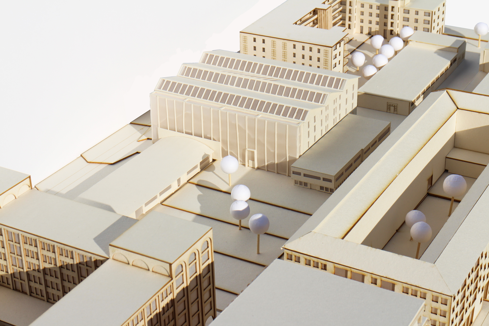
OMplast
Prosjektet ligger på Tempe, rett sør for Trondheim sentrum. Som svar på en voksende bykjerne utvikler prosjektet området med et urbant produksjonslokale, spesifikt plastgjenvinning. Prosjektets visjon er å dele kunnskap og engasjement rundt plastgjenvinning, og videreføre Tempes industrielle historie inn i en ny, urban kontekst. De to eksisterende bygningene på tomta bevares og oppgraderes, og kobles sammen med det nye produksjonsbygget ved hjelp av en bevegelsessone. Bevegelse og logistikk er førende for programdisposisjonen, og et stort atrium strekker seg gjennom produksjonsvolumet og trekker dagslys ned i etasjene.
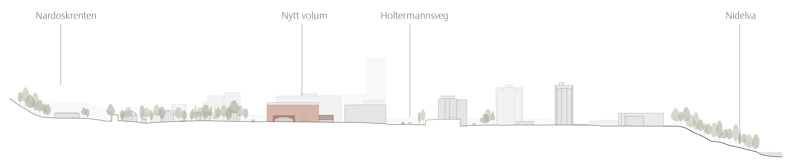
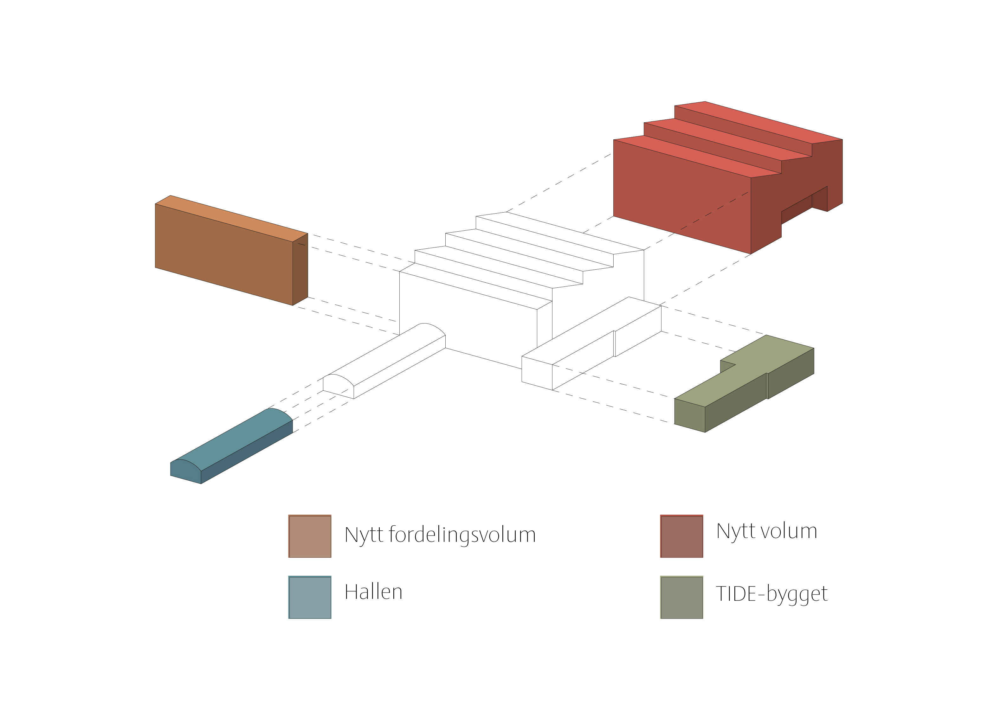
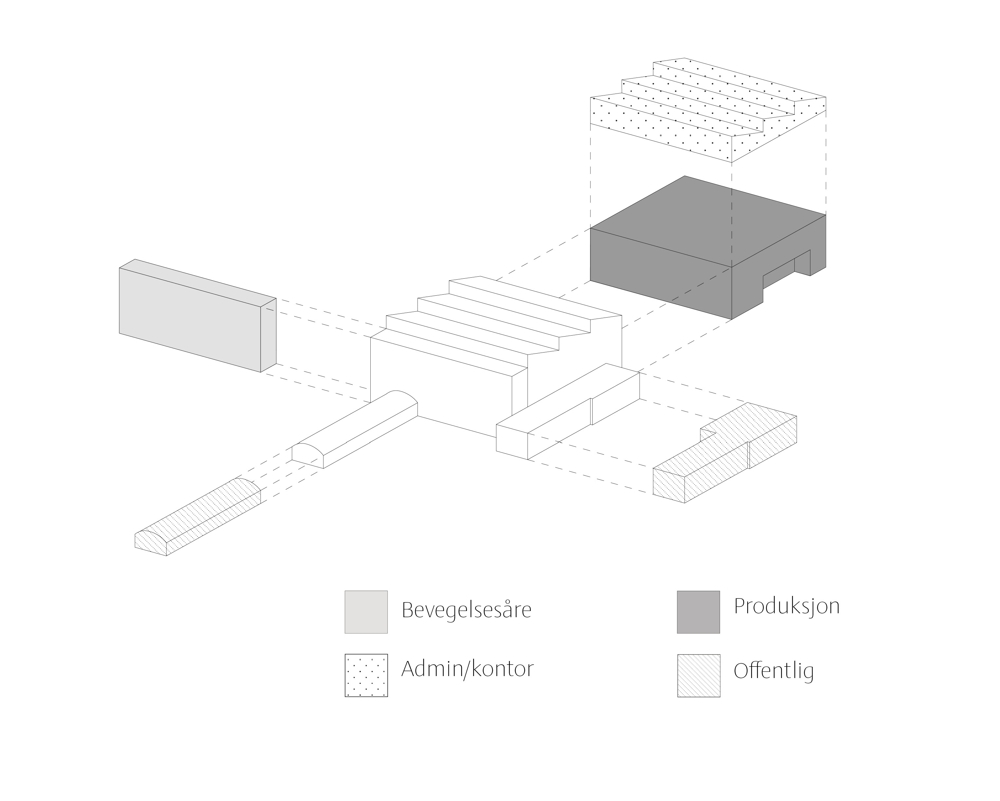
De ulike bygningsvolumene følger ulik logikk i form av sine program og konstruksjonsprinsipper. Verkstedhallen får nytt liv som et offentlig, samlende sted og åpner seg opp mot det nye Tempe Torg. Nybygget der hoveddelen av plastgjenvinningen foregår kobler seg på de to eksisterende konstruksjonene med en bevegelsessone som møter alle volumene. TIDE-bygget åpnes opp til et dobbelhøyt rom med butikk og cafe.
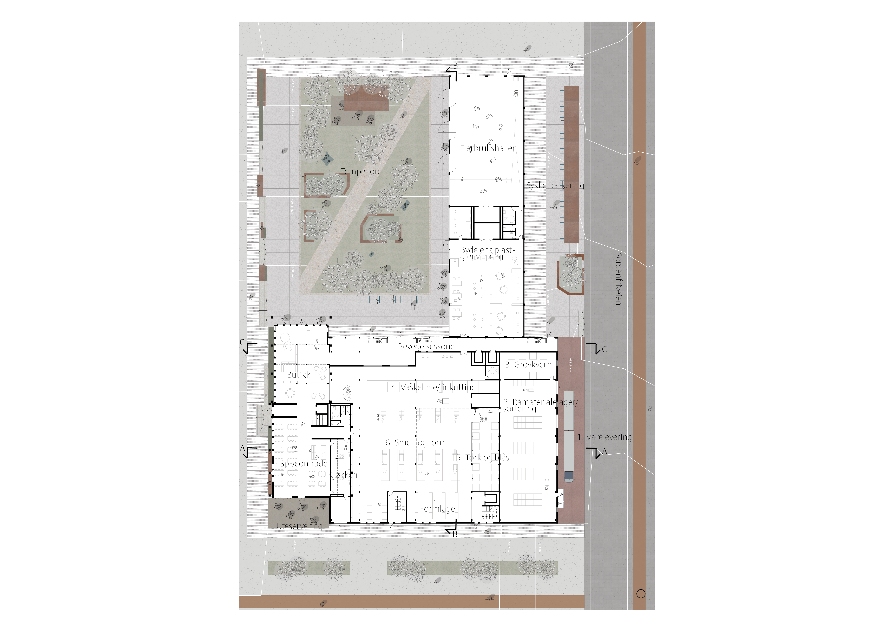
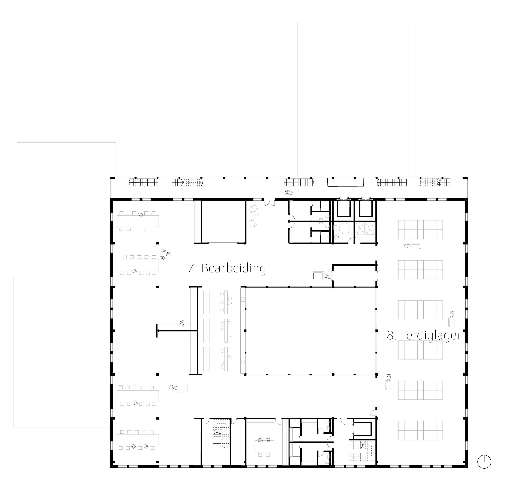
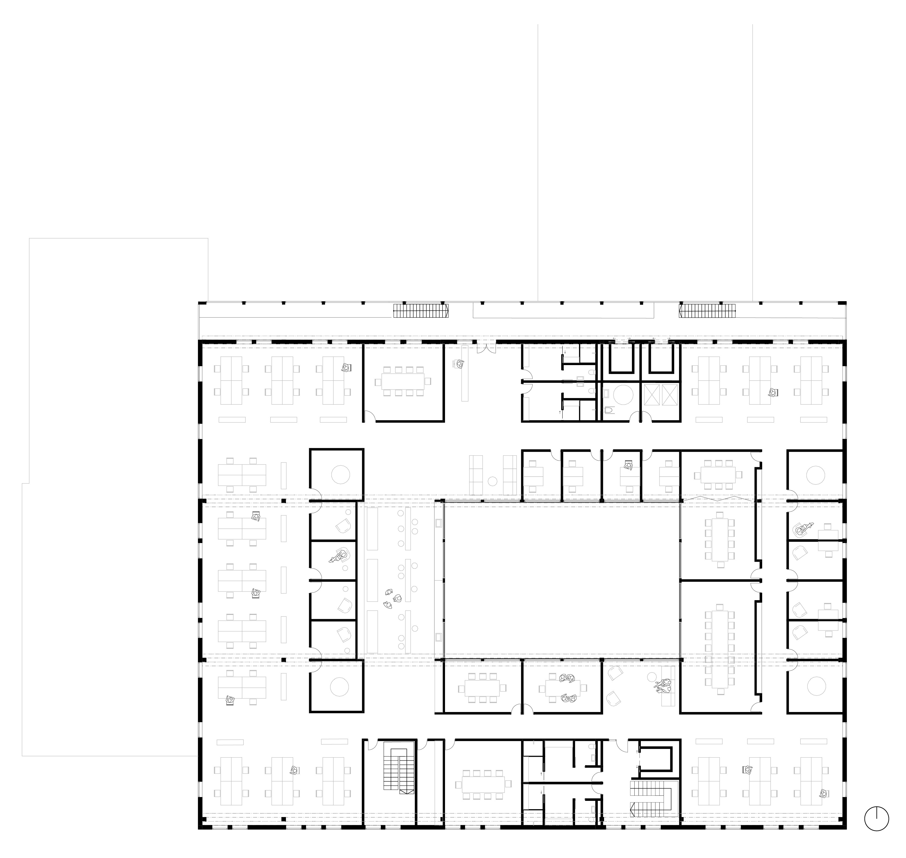
Prosjektet ønsker invitere nabolaget inn i plastproduksjon, både for å være en del av området men også for å dele kunnskap om gjenvinning. Gjennom et offentlig plastproduksjonsverksted i verkstedhallen kan privatpersoner selv komme og gjenvinne plastgjenstander, i tillegg til å tilby en tilhørende kafé og en butikk der gjenbruksvarer selges. Selve plastproduksjonen følger et sammenhengende løp fra varelevering, via behandling, til lager, organisert over to dobbelhøye plan (1. og 3.) med tilhørende administrasjons- og forskningslokaler i 5. etasje. Et større atrium gjennom etasjene sikrer dagslys ned i den dype konstruksjonen.
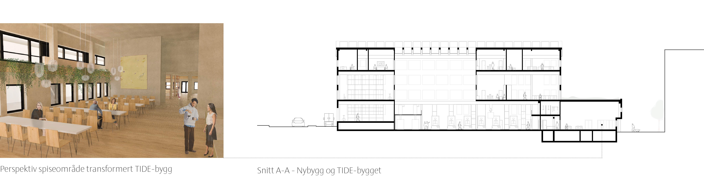
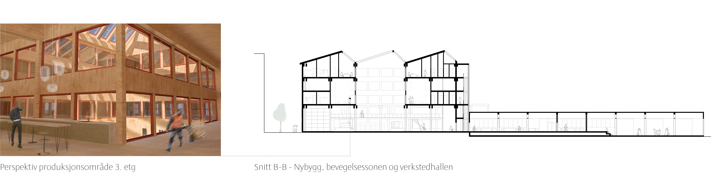
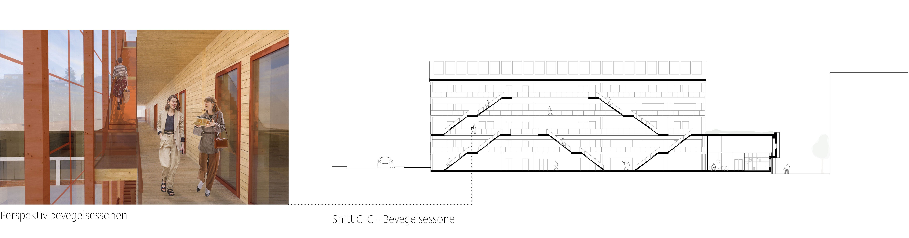
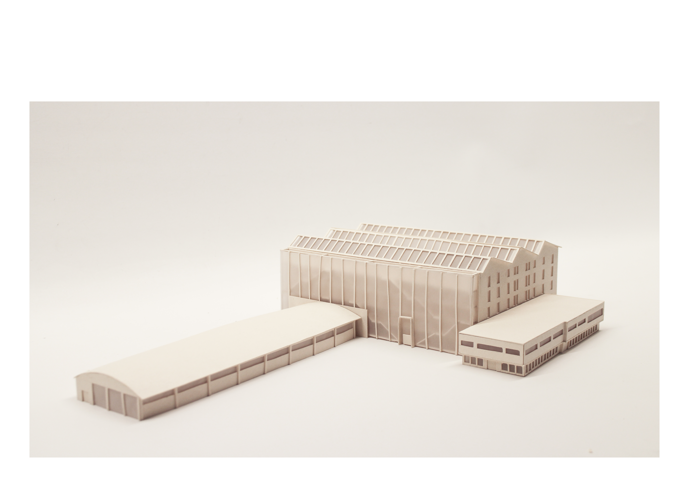
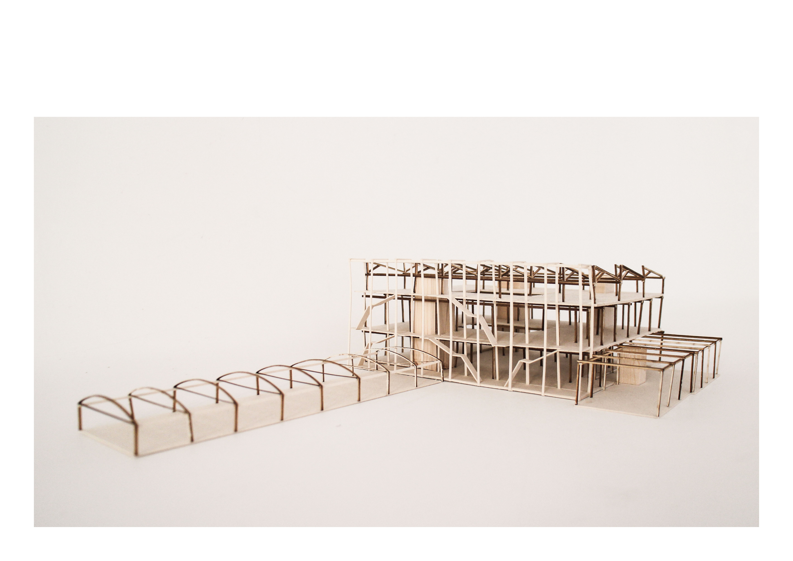